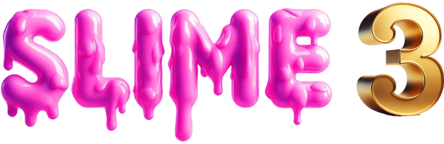

Studies in Linguistics, Information, Meaning and Expression 3Sept. 20–21, 2024 • UCLA
Time: Sept. 20–21, 2024
Location: Royce Hall 306
Faculty organizers: Joshua Armstrong, Sam Cumming, and Gabriel Greenberg
Graduate student organizers: Alonso Molina, Kenny Galbraith, James Gu
Events coordinator: Ashna Madni
All are welcome, but please RSVP if possible!
[link to RSVP form]
Format: The conference is “pre-view”: recorded talks will be available ahead of time. Discussion is led by a commentator (20 min), followed by replies from the speaker (20 min) and Q+A (60 min).
Pre-view expectation: We ask that all attendees view or read the talks prior to the day when they are being discussed. Thank you!
Speakers
Robert Henderson [website]
Professor of Linguistics, University of Arizona
Samia Hesni [website]
Assistant Professor of Philosophy, Boston University
Robert Hawkins [website]
Assistant Professor of Linguistics, Stanford University
Kartik Chandra [website]
Doctoral student, MIT CSAIL
Cailin O’Connor [website]
Professor, Logic and Philosophy of Science, UC Irvine
Andrea Beltrama [website]
Temporary Assistant Professor, Linguistics and Cognitive Science, University of Delaware
Commentators
Jessica Rett [website]
Professor of Linguistics, UC Los Angeles
Ayana Samuel [website]
Assistant Professor of Philosophy, York University
Gabe Dupre [website]
Assistant Professor of Philosophy, UC Davis
Gabe Greenberg [website]
Associate Professor of Philosophy, UC Los Angeles
Sahar Heydari Fard [website]
Assistant Professor of Philosophy, Ohio State University
Allison Nguyen [website]
Assistant Professor, Psychology, Illinois State University
Schedule
Friday 09/20
First talk: 10:00 AM – 11:40 AM
Speaker: Andrea Beltrama, ‘Bridging pragmatic reasoning and social perception: towards an integrative view of inference drawing in communication’ [link to video] [link to supplementary readings]
Commentator: Allison Nguyen
Lunch: 11:40 AM – 1:00 PM
Second talk: 1:00 PM – 2:40 PM
Speaker: Robert Henderson, ‘Sign, Gesture, and Meaning in Mesoamerica’ [link to video and slides]
Commentator: Jessica Rett
Third talk: 3:00 PM – 4:40 PM
Speaker: Kartik Chandra, “What you expect when you’re expressing” [link to video]
Commentator: Gabe Greenberg
Saturday 09/21
First talk: 10:00 AM – 11:40 AM
Speaker: Samia Hesni, Stereotypes and Scripts: Why Generics and Scripts Make Norms, and How We Can Change Them [link to reading]
Commentator: Ayana Samuel
Lunch break: 11:40 AM – 1:00 PM
Second talk: 1:00 PM – 2:40 PM
Speaker: Robert Hawkins, ‘Public language as an emergent phenomenon’ [link to video]
Commentator: Gabe Dupre
Third talk: 3:00 PM – 4:40 PM
Speaker: Cailin O’Connor, ‘Convention for One’ [link to video]
Commentator: Sahar Heydari Fard
SLIME is made possible through the generosity of the Kaplan-Panzer fund.
In case of technical issues, please email James Gu, jamesgu10@g.ucla.edu.